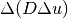
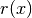
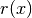

Bilaplacian and Kirchhoff-Love plate bricks¶
The following function
ind = add_bilaplacian_brick(md, mim, varname, dataname,
region = size_type(-1));
adds a bilaplacian brick on the variable varname and on the mesh region region. This represent a term . where  is a coefficient determined by dataname which could be constant or described on a f.e.m. The corresponding weak form is
is a coefficient determined by dataname which could be constant or described on a f.e.m. The corresponding weak form is  .
.
For the Kirchhoff-Love plate model, the weak form is a bit different (and more stable than the previous one). the function to add that term is
ind = add_bilaplacian_brick_KL(md, mim, varname, dataname1, dataname2,
region = size_type(-1));
It adds a bilaplacian brick on the variable varname and on the mesh region region. This represent a term where
is a the flexion modulus determined by dataname1. The term is
integrated by part following a Kirchhoff-Love plate model
with dataname2 the poisson ratio.
There is specific bricks to add appropriate boundary conditions for fourth order partial differential equations. The first one is
ind = add_normal_derivative_source_term_brick(md, mim, varname,
dataname, region);
which adds a normal derivative source term brick
 on the variable varname and on the
mesh region region. It updates the right hand side of the linear
system. dataname represents b and varname represents v.
on the variable varname and on the
mesh region region. It updates the right hand side of the linear
system. dataname represents b and varname represents v.
A Neumann term can be added thanks to the following bricks
ind = add_Kirchhoff_Love_Neumann_term_brick(md, mim, varname,
dataname1, dataname2, region);
which adds a Neumann term brick for Kirchhoff-Love model on the variable varname and the mesh region region. dataname1 represents the bending moment tensor and dataname2 its divergence.
And a Dirichlet condition on the normal derivative can be prescribed thanks to the following bricks
ind = add_normal_derivative_Dirichlet_condition_with_multipliers
(md, mim, varname, multname, region, dataname = std::string(),
R_must_be_derivated = false);
ind = add_normal_derivative_Dirichlet_condition_with_multipliers
(md, mim, varname, mf_mult, region, dataname = std::string(),
R_must_be_derivated = false);
ind = add_normal_derivative_Dirichlet_condition_with_multipliers
(md, mim, varname, degree, region, dataname = std::string(),
R_must_be_derivated = false);
These bricks add a Dirichlet condition on the normal derivative of the variable
varname and on the mesh region region (which should be a boundary.
The general form is  where  is the right hand side for the Dirichlet condition (0 for
homogeneous conditions) and
where  is the right hand side for the Dirichlet condition (0 for
homogeneous conditions) and  is in a space of multipliers
defined by the variable multname (first version) or defined on the finite element method mf_mult (second version) or simply on a Lagrange finite element method of degree degree (third version) on the part of boundary determined
by region. dataname is an optional parameter which represents
the right hand side of the Dirichlet condition.
If R_must_be_derivated is set to true then the normal
derivative of dataname is considered.
is in a space of multipliers
defined by the variable multname (first version) or defined on the finite element method mf_mult (second version) or simply on a Lagrange finite element method of degree degree (third version) on the part of boundary determined
by region. dataname is an optional parameter which represents
the right hand side of the Dirichlet condition.
If R_must_be_derivated is set to true then the normal
derivative of dataname is considered.
The test program bilaplacian.cc is a good example of the use of the previous bricks.

前のトピックへ
次のトピックへ
Download
Main documentations
- GetFEM++ User documentation
- Python Interface
- Matlab Interface
- Scilab Interface
- Gmm++
- GetFEM++ project